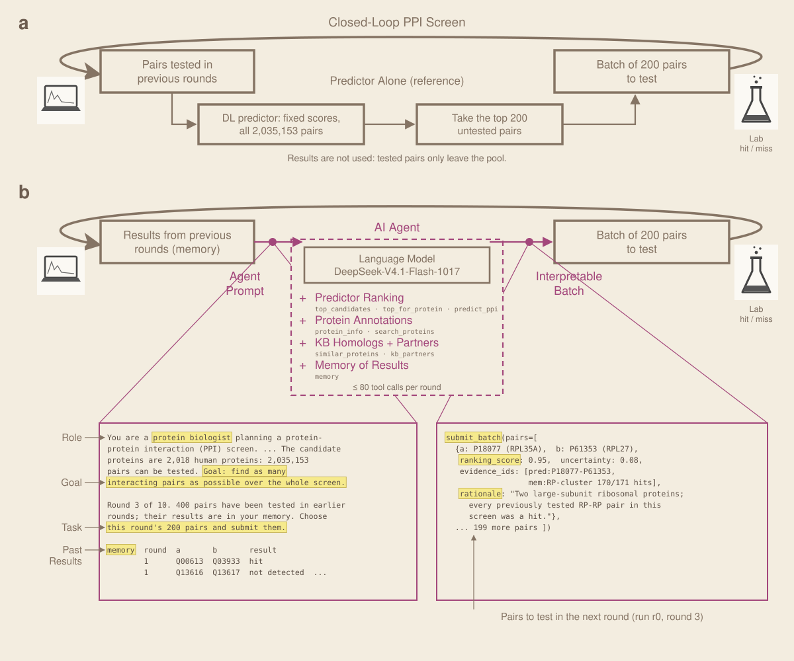
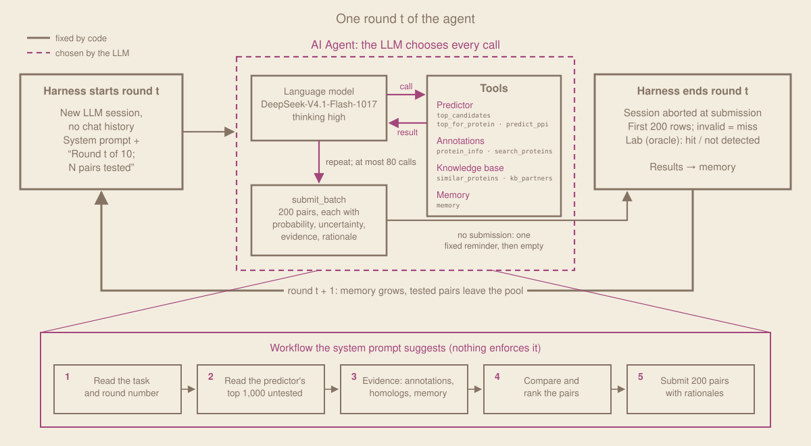
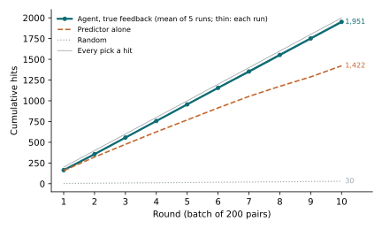
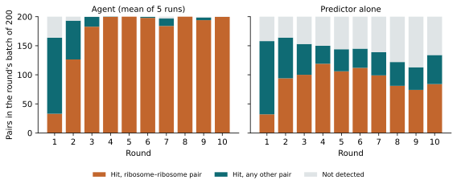
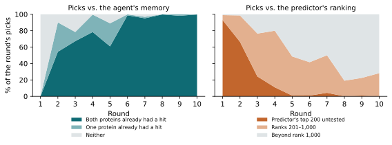
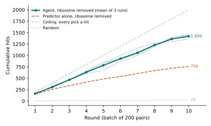
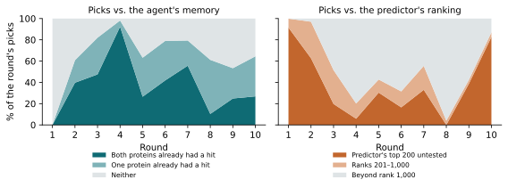
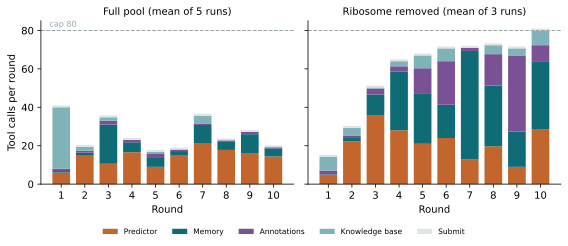

PRING PPI discovery: true-feedback baseline
This page reports the first baseline: a fixed agent in the discovery-only setting of the task setting. The acquisition split is all 2,018 PRING test proteins (2,035,153 candidate pairs, 30,128 hits, 1.48%), the knowledge base is PRING train and validation, and there is no final test split. Each round the agent selects 200 untested pairs and the closed-world oracle reveals which are hits; we count the hits over 10 rounds.
1. The runs

We ran 5 runs × 10 rounds × 200 pairs, so each run tests 2,000 pairs. Every run starts from the full pool with an empty memory; the spread across runs is LLM sampling variation.
2. The agent
The agent is DeepSeek-V4.1-Flash-1017 (thinking high) running in the pi agent harness, with a fixed prompt and no internet access. Code fixes the outer loop of each round; inside it the LLM decides which tools to call, in what order, and which 200 pairs to submit. The system prompt suggests a five-step workflow, but nothing enforces it.

The agent sees the 2 million pairs only through tools that return small slices.
Table 1. The agent's tools.
| Source | Tool | Input | Returns |
|---|---|---|---|
| Predictor | top_candidates | offset, limit (≤ 200) | A page of the untested pairs ranked by predictor probability p; ranks count untested pairs only |
top_for_protein | one protein, n (≤ 100) | That protein's n best untested partners by p | |
predict_ppi | two proteins | p for that one pair, its rank among untested pairs, or "already tested" | |
| Annotations | protein_info | up to 20 proteins | Name, function, location, tissue, GO terms, keywords, Pfam/InterPro; sequence on request. Interaction text removed |
search_proteins | text, scope, limit | Proteins whose name or annotation contains the text (e.g. a GO term), among candidates, knowledge base or both | |
| Knowledge base | similar_proteins | one protein | Its sequence homologs in the knowledge base (mmseqs2 identity, E-value). Candidates share at most ~40% identity with any of them |
kb_partners | one knowledge-base protein | Its labelled pairs: partner, interacts or not, evidence source. Candidates have none here; the agent reaches this through a candidate's homolog | |
| Memory | memory | optional protein, hits only | Pairs tested in earlier rounds of this run, with round and result |
| Submit | submit_batch | 200 pairs, each with probability, uncertainty, evidence, rationale | Sends the batch to the lab; final, once per round |
3. Results

Where the hits come from
Positives are not spread evenly. PRING counts every pair inside a protein complex as an interaction, so each large complex is a dense block of positives. The largest here is the ribosome: 71 candidate proteins and 2,485 pairs (0.12% of all candidates), every one of which interacts: 8.2% of all positives. Once feedback shows that a few ribosome pairs hit, a picker can fill every batch from the block and score close to 200 without finding anything new, and hit count rewards that. Over rounds 1–10, 1,717.4 of the agent's 1,951.2 hits (mean of 5 runs) are ribosome–ribosome pairs, against 901 of the predictor's 1,422. Outside the ribosome the agent finds 233.8 hits to the predictor's 521, and its hits cover 242.2 proteins to the predictor's 446.

How the agent decides
Each round starts a fresh LLM session that keeps only the memory of tested pairs. We read the agent's decisions from its tool-call log and its submitted pairs, and ask two things of each pick: were its proteins already in a hit, and where does it rank among the predictor's untested pairs?

The agent works in three phases:
- Round 1: follow the predictor. With no feedback, 93% of picks are the predictor's top 200. It also makes 32 calls to knowledge-base homologs and partners, more than in all later rounds together.
- Rounds 2–3: build on the hits. The agent reads its memory and pairs proteins that hit with each other and with their top predicted partners. In round 2, 54% of picks join two proteins that already had a hit. Pairs from the ribosome, the COG/GARP tethering complexes, the exosome and the proteasome enter this way.
- Rounds 4–10: exhaust the ribosome. 61–100% of picks join two proteins with earlier hits (95–100% from round 6), and each batch holds 56–75 distinct proteins, mostly RPL/RPS. The median pick ranks 2,000–63,000 among untested pairs. The agent finds the remaining ribosome pairs with
top_for_proteinandmemory, rarely calls homolog, knowledge-base or annotation tools, and uses 18–37 of its 80 calls per round (Figure 8).
4. Ablation: the ribosome removed
Is the ribosome the agent's whole advantage? We removed the 71 cytosolic ribosomal proteins (RPL/RPS genes and RACK1) from the candidate space and reran the same agent. Their rows leave the protein, annotation and homolog files, every pair containing one of them leaves the predictor's scores, and the prompt states the new pool size and hit rate. Nothing else changes: same model, prompts, tools, knowledge base and predictor scores. The pool keeps 1,947 proteins and 1,894,431 pairs, of which 24,323 (1.28%) interact. We ran 3 runs × 10 rounds × 200 pairs.

Where the hits come from
The agent finds a new dense block every few rounds. Rounds with 191–200 hits come from the Golgi and endosomal SNAREs (STX, VTI1, VAMP, GOSR, BET1, SEC22B), Mediator (MED), the COP9 signalosome (COPS, GPS1), eIF3, the proteasome lid (PSMD), the nuclear pore (NUP), the RNA exosome (EXOSC), PRC1 (CBX, PCGF), intraflagellar transport (IFT), the Fanconi core (FANC) and ESCRT. It finds them by name: 310 search_proteins calls over 30 rounds, for complex names such as “proteasome”, “exocyst”, “mcm”, “chaperonin”, “coatomer” and “escrt”, and 5 for “ribosomal protein”, which now returns 16 proteins such as MRPL28, RPS6KB1 and nucleolar factors, none of them cytosolic ribosomal proteins.
How the agent decides


The policy is the one in Section 3, run on smaller blocks. Round 1 follows the predictor (183 of 200 picks in its top 200). From round 3 the agent works through one complex after another: in round 4, 185 of 200 picks join two proteins that already had a hit, and in round 8 each batch holds 29 distinct proteins with a median rank of 173,347. No single complex fills ten rounds, so the agent keeps searching: it makes 69 calls per round from round 3 (18–37 on the full pool; Figure 8) and runs into the 80-call cap in 7 of 30 rounds. In round 10 it returns to the predictor (165 of 200 picks in its top 200) and finds 61.0 hits.